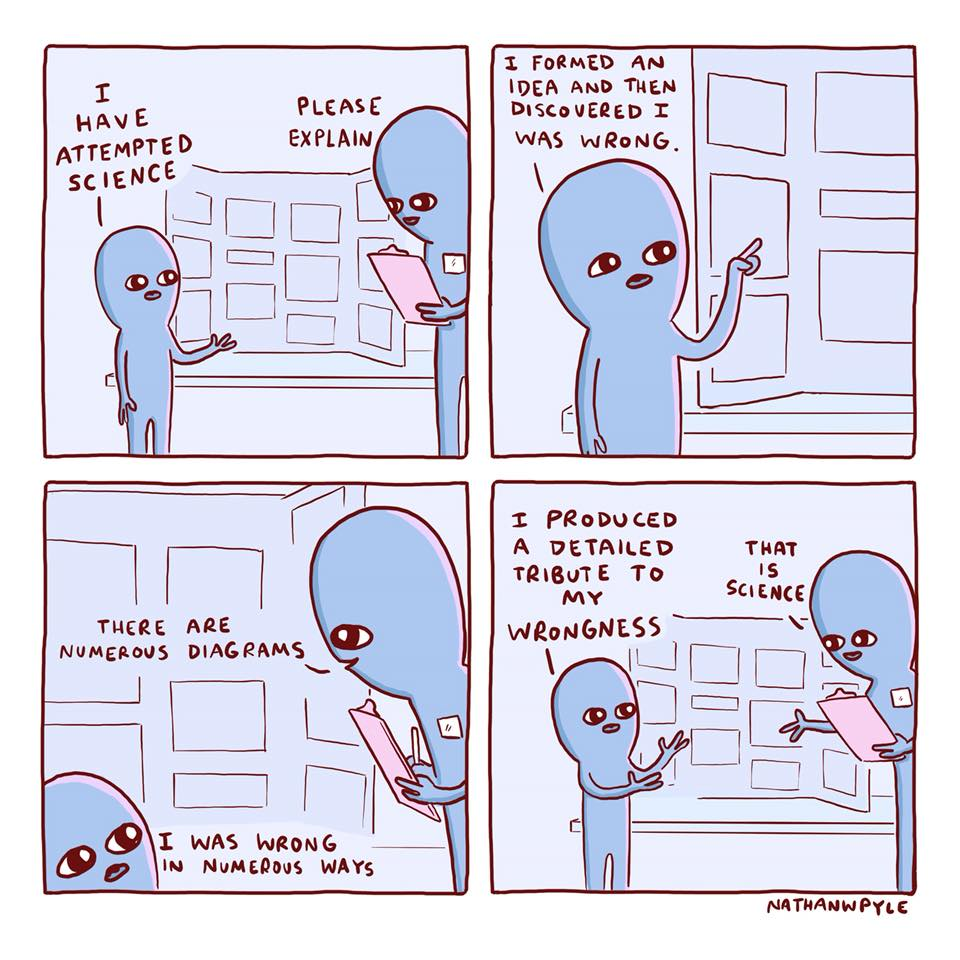
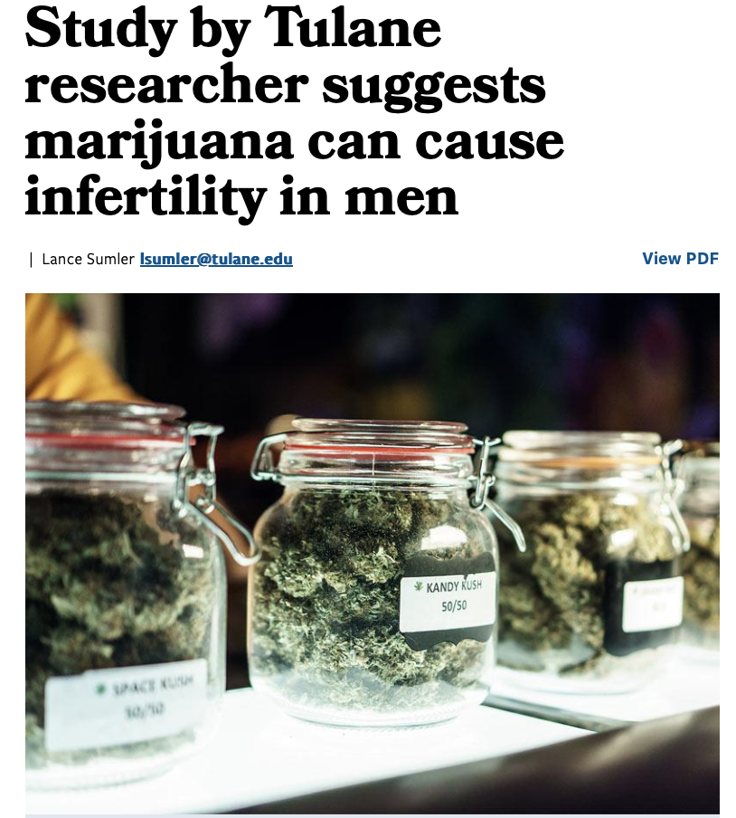

Introduction to Empirical Methods in Political Science
This is a course about Political Science research methods
Some philosophers may think “Political Science” is an oxymoron
Can there be a SCIENCE of POLITICS?

Inference: Use what we know to learn about what we do not know
Key: Try to prove ourselves wrong, even if we believe we are right (falsification)
Scientific statements are falsifiable
A meaningful
A meaningful declarative sentence
A meaningful declarative sentence that is unambiguously true or false.
Meaningful: We agree on its interpretation
Declarative: Claims or asserts something
Unambiguously true or false: One or the other, but not both or neither (therefore refutable or falsifiable)
Triangles have three sides
Political science is the study of politics
God created the world
Edison created the lightbulb
Two types:
Important: non-science \(\neq\) nonsense
Scientific statements are true or false
Scientific knowledge/evidence is neither
Why?
How do you evaluate a scientific statement?
Step 0: Puzzle/Question
Step 1: Theory/Model
Step 2: Hypothesis/Implications
Step 3: Observation/Testing
Step 4: Conclusion/Evaluation

Puzzle/question:
Puzzle/question: Does marijuana cause infertility?
Puzzle/question: Does marijuana cause infertility?
Theory:
Puzzle/question: Does marijuana cause infertility?
Theory: THC kills cells
Puzzle/question: Does marijuana cause infertility?
Theory: THC kills cells
Hypothesis:
Puzzle/question: Does marijuana cause infertility?
Theory: THC kills cells
Hypothesis: Male smokers have lower semen volume than non-smokers
Puzzle/question: Does marijuana cause infertility?
Theory: THC kills cells
Hypothesis: Male smokers have lower semen volume than non-smokers
Test:
Puzzle/question: Does marijuana cause infertility?
Theory: THC kills cells
Hypothesis: Male smokers have lower semen volume than non-smokers
Test:
Puzzle/question: Does marijuana cause infertility?
Theory: THC kills cells
Hypothesis: Male smokers have lower semen volume than non-smokers
Test: Bring men to lab, ask if they smoke, measure sperm, ask if they smoke, compare
Puzzle/question: Does marijuana cause infertility?
Theory: THC kills cells
Hypothesis: Male smokers have lower semen volume than non-smokers
Test: Bring men to lab, ask if they smoke, measure sperm, ask if they smoke, compare
Conclusion:
Puzzle/question: Does marijuana cause infertility?
Theory: THC kills cells
Hypothesis: Male smokers have lower semen volume than non-smokers
Test: Bring men to lab, ask if they smoke, measure sperm, ask if they smoke, compare
Conclusion: “Study by Tulane researcher SUGGESTS marijuana CAN cause infertility in men”
We want to know the counterfactual: Person A’s fertility with and without marijuana consumption
But we can only compare smokers to non-smokers
This is the fundamental problem of causal inference (more in week 5)
Also…
Cannot test theories because they are statements
Need to believe theory is true to engage with it scientifically
Instead, test arguments that follow from a theory (hypotheses, implications)
Valid argument: Accepting it compels us to accept conclusion
Invalid argument: Accepting premises frees us from accepting/rejecting conclusion
Valid critiques to valid arguments fall in three categories
Omitted variable: Stress leads men to smoke marijuana AND to become infertile
Reverse causation: Infertility causes men to smoke marijuana
Selection bias: Men who smoke marijuana wait longer before going consulting a doctor
A valid critique implies:
Observed implications also follow from alternative theories
Cannot falsify theory
Need to find better implications to distinguish among competing theories
Scientist’s dilemma:
EMPS Chapters 3-4
What is a theory? What is a good theory?
Different types of data/variables
Application: Billionaire politicians